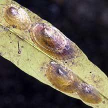
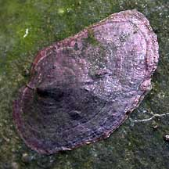
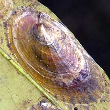

|
|
| bivalves text index | photo index |
| Phylum Mollusca > Class Bivalvia |
| Jingle
clams Family Anomiidae updated May 2020
Where seen? Like slivers of mother-of-pearl, the lustrous shells of dead jingle clams are often washed ashore. Intrigued beach-comers might wonder what made these delicate treasures.The living animals are commonly found under stones, while some species settle on mangrove tree trunks and leaves. What are jingle clams? Jingle clams belong to Family Anomiidae. A handful of these delicate shells makes a jingling sound, which is probably how their common name came about. The Window-pane clam (Placuna sp.) was previously grouped under Family Anomiidae. It is now under Family Placunidae. Features: 3-6cm in diameter. The animal has a two-part shell although those stuck to rocks and hard surfaces may appear to only have one valve. The lustrous shells are paper thin and translucent. It seems difficult to imagine how something so delicate can protect an animal. Sometimes confused with limpets which are gastropods and can move about. Slipper snails (Crepidula sp.) also appear similar. Here's more on how to tell apart limpets, slipper snails and similar animals. What do they eat? Like other bivalves, jingle clams are filter feeders. When submerged, a jingle clam opens its valves a little. They then generate a current of water through the shell and sieve out the food particles with enlarged gills. When exposed at low tide, the valves are clamped tightly shut to prevent water loss. |
 Mangrove jingle clam on a mangrove leaf. Lim Chu Kang, Jan 04 |
 Mangrove jingle clam on a mangrove tree trunk. Seletar, Jun 02 |
 In this shell of a dead Under-a-stone jingle clam, you can see the notch in the valve that was stuck to the rock Pulau Sekudu, Jun 06 |
| Status and threats: Like other creatures of the intertidal zone, they are affected by human activities such as reclamation and pollution. Trampling by careless visitors can also affect local populations. |
| Some Jingle clams on Singapore shores |
 Mangrove jingle clam |

| Family
Anomiidae recorded for Singapore from Tan Siong Kiat and Henrietta P. M. Woo, 2010 Preliminary Checklist of The Molluscs of Singapore. +from our observation ^from WORMS
|
Links
References
|